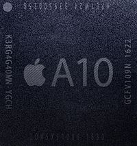

|
名称
|
型号
|
图片
|
制程
|
CPU核心 |
cpu架构
|
gpu
| 推出时间
| 产品
|
|
A10 Fusion
|
APL1W24
|
 |
16 nm FinFET (TSMC) |
2.34 GHz 四核心 (2× Hurricane + 2× Zephyr) |
ARMv8.1-A |
客制化PowerVR GT7600 Plus (六核心)[43][60][61] @ 900 MHz (345.6 GFLOPS[62]) |
2016年9月 |
iPhone 7
iPhone 7 Plus
iPad (第六代)
iPod touch (第七代)
iPad (第七代) |
|
A11 Bionic
|
APL1W72
|
|
10 nm
FinFET |
2.39 GHz 六核心 (2× Monsoon + 4× Mistral) |
ARMv8.2-A |
苹果公司自研 (三核心) @ 1066 MHz (~408 GFLOPS) |
2017年9月 |
iPhone 8
iPhone 8 Plus
iPhone X
|
|
A12 Bionic
|
APL1W81
|
|
7 nm FinFET (TSMC N7) |
2.49 GHz 六核心 (2× Vortex + 4× Tempest) |
ARMv8.3-A |
苹果公司自研 (四核心) ~@ 1125 MHz (~576 GFLOPS) |
2018年9月 |
iPhone XS
iPhone XS MAX
iPhone XR
iPad mini5
iPad air3
iPad (第八代)
|
|
A13 Bionic
|
APL1W85
|
|
7 nm FinFET (TSMC N7P) |
2.65 GHz 六核心 (2× Lightning + 4× Thunder) |
ARMv8.4-A |
苹果公司自研 (四核心) ~@ 1575 MHz (~806 GFLOPS) |
2019年9月 |
iPhone 11
iPhone 11 Pro
iPhone 11 Pro Max
iPhone SE (第二代)
Studio Display
|
|
A14 Bionic
|
APL1W01
|
|
5 nm FinFET (TSMC N5) |
2.99 GHz 六核心 (2× Firestorm + 4× Icestorm) |
ARMv8.6-A |
苹果公司自研 (四核心) ~@ 1575 MHz (~806 GFLOPS) |
2020年9月 |
iPhone 12
iPhone 12 Pro
iPhone 12 Pro Max
iPhone 12 mini
iPad (第十代)
iPad air 4
|
|
A15 Bionic
|
APL1W07
|
 |
5 nm FinFET (TSMC N5P) |
最高2.93~3.23 GHz (2× Avalanche) + 最高1.823 GHz (4× Blizzard) |
ARMv8.6-A |
苹果公司自研 (四核心) ~@ 1575 MHz (~806 GFLOPS) |
2021年9月 |
iPhone 13
iPhone 13 Pro
iPhone 13 Pro Max
iPhone 13 mini
iPhone 14
iPhone 14 Plus
iPad (第十代)
iPad mini 6
iPhone SE(3th)
|
|
A16 Bionic
|
APL1W10
|
|
5 nm FinFET (TSMC N5P) |
最高2.93~3.3 GHz (2× Avalanche) + 最高1.823 GHz (4× Blizzard) |
ARMv8.6-A |
苹果公司自研 (四核心) ~@ 1575 MHz (~806 GFLOPS) |
2022年9月 |
iPhone 13 Pro
iPhone 13 Pro Max |